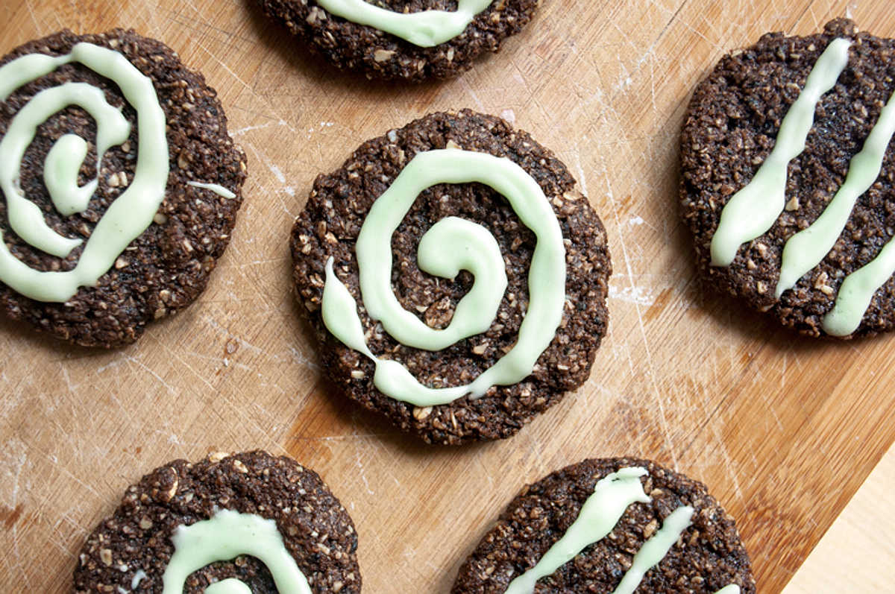

wasabi swirl chocolate cookies
13 cookies — 30 minutes
Black sesame chocolate cookies with a wasabi glaze, it's surprising how well these two things go together.
we wanted to mix the wasabi directly in the cookies at first, but after reading a lot about baking wasabi, we decided to apply it after in the form of a glaze because the taste of wasabi fades significantly when heated.
It doesn't taste too strong, and adds just the right amount of kick.
Quick Yogurt
To make quick yogurt or sour milk, add apple cider vinegar to soy milk. The vinegar makes soy curdle and thicken, and adds sourness that makes it taste more complex.
 flax seeds7 g, ground
flax seeds7 g, ground water45 ml
water45 ml black sesame seeds35 g
black sesame seeds35 g canola oil60 ml
canola oil60 ml soy yogurt30 ml
soy yogurt30 ml natural brown sugar130 g
natural brown sugar130 g vanilla extract5 ml
vanilla extract5 ml sea salt1.25 g
sea salt1.25 g cocoa powder10 g
cocoa powder10 g rolled oats140 g, ground
rolled oats140 g, ground soy milk10 ml
soy milk10 ml
cookies
- Preheat oven to 180 °C (350 °F).
- Mix 7 g (1 tbsp) of ground flax seeds with 45 ml (3 tbsp) of water (this is your 'flax egg'). Let thicken.
- Sautee 35 g (1/4 cup) of black sesame seeds in a non-stick pan at medium heat, roast until they begin to pop. Let cool.
- Mix the sesame seeds with 30 ml (2 tbsp) of soy yogurt and pulse in an immersion blender. Alternatively, you can crush the sesame seeds into a mortar and pestle first, then mix it into the soy yogurt.
- In a bowl, add the flax seed 'egg' to the sesame mix, along with a 60 ml (1/4 cup) of canola oil, 130 g (2/3 cup) of natural commercial brown sugar and 5 ml (1 tsp) of vanilla extract. Stir well.
- Take 140 g (1 1/2 cups) of rolled oats, break it down into 'coarse' flour with a mortar and pestle. Don't grind it too finely, having bigger bits gives an interesting texture to the cookie!
- Add the dry ingredients one by one, mixing thoroughly in-between. Add 1.25 g (1/4 tsp) of salt, 10 g (2 tbsp) of unsweetened cocoa powder, the coarsely ground 'oat' flour as well as 10 ml (2 tsp) of soy milk
- Take 1 generous spoonful of cookie dough and form into a ball. Put the balls onto a baking sheet lined with a baking mat. Flatten the balls a bit with the palm of your hand.
- Bake for 13 minutes, let cool.
 powdered sugar55 g
powdered sugar55 g wasabi powder15 g
wasabi powder15 g- soy milk30 ml
glaze
- Mix 55 g (1/2 cup) of powdered sugar and 15 g (1 tbsp) of wasabi powder together.
- Add 30 ml (2 tbsp) of soy milk in gradually while mixing, add more if need be. Apply glaze to cookies! I don't have any fancy glazing tools so i just used a ziploc bag (can clean to re-use later). Just put the glaze in the bag and cut the end off one of the corners and squeeze the glaze through the hole.